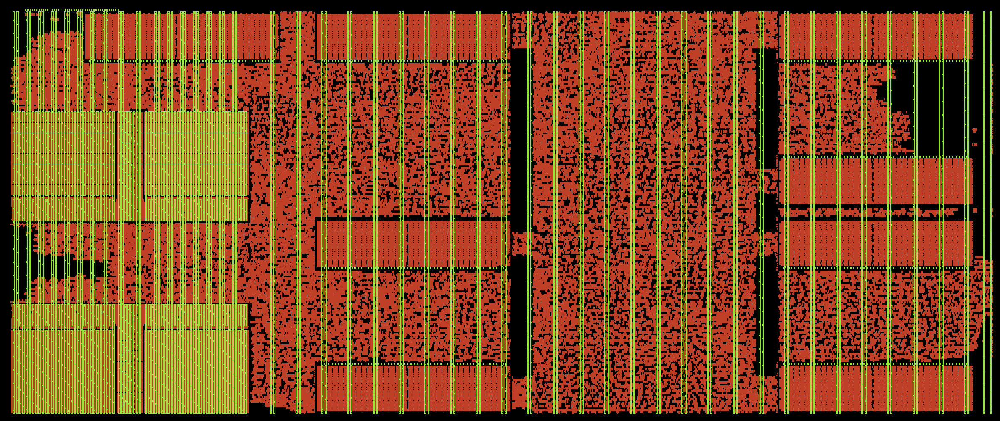

Tiny Tapeout · IHP SG13CMOS5L · LibreLane
A first-timer's walkthrough: where the IHP memory macro lives, how to wire it into your RTL, how to feed it power on a tile that only has Metal4 stripes, and which sign-off checks will yell at you and why.
Every Tiny Tapeout design eventually wants a buffer. A frame of Ethernet, a few milliseconds of audio, a trace log. In flip-flops that memory is brutally expensive: a single flop in the CMOS5L standard cell library is about 52 µm² before you add the write and read muxing around it. The IHP SRAM macro stores a bit in under 5 µm², and it comes with its own decoder, sense amps and a clean synchronous interface.
The same 16 kilobits built from flops would eat about 70 % of an 8x4 tile in flip-flop area alone. That is the whole argument. My Jane Street competition entry, a programmable protocol engine called PRISM riding on the TinyQV RISC-V core, uses two of these macros as packet FIFOs, one per direction, and the repository is public if you want to see every file mentioned below in context: github.com/kdp1965/ihp-um-janestreet-prism.
A hard macro is a finished piece of layout. You do not synthesize it, you do not place cells inside it. The flow treats it as one big opaque rectangle with pins on the edge, and your job is to (1) tell the tools where the rectangle goes, (2) connect its pins, (3) get power into it, and (4) convince every checker that the black box is fine. That's the entire post.
First, get the PDK itself. Everything for this process lives in one public git repository, IHP-Open-PDK, and the CMOS5L variant is the ihp-sg13cmos5l folder inside it, next to the seven-metal ihp-sg13g2 that the earlier IHP shuttles used. Tiny Tapeout's own checks install it from the repository's dev branch at a pinned commit, so use the same one and your local results will match the precheck. The repository is large, so fetch just that commit:
mkdir -p ~/pdk/IHP-Open-PDK && cd ~/pdk/IHP-Open-PDK
git init -q
git fetch --depth 1 https://github.com/IHP-GmbH/IHP-Open-PDK.git 2bbec755dc67ca3db0261c3d6163e15735d66710
git checkout -q FETCH_HEAD
# the two variables every tool in the flow reads
export PDK_ROOT=~/pdk/IHP-Open-PDK
export PDK=ihp-sg13cmos5lPDK_ROOT is the directory that contains the PDK folders, not the PDK folder itself. LibreLane joins the two variables to find the process, and every pdk_dir:: path you will see in the config below resolves to $PDK_ROOT/$PDK/. Put the two exports in your shell profile; forgetting them is the most common reason a first run fails before it starts, usually with a complaint that some LEF or lib file does not exist. Check the commit hash against the precheck action you are using before you trust it, since Tiny Tapeout moves the pin when IHP updates the memories.
With that in place, the IHP open PDK ships a whole family of compiled memories. In the CMOS5L variant of the PDK they sit next to the standard cells:
$PDK_ROOT/ihp-sg13cmos5l/libs.ref/sg13cmos5l_sram/
cdl/ # transistor-level netlist, used by LVS
doc/ # one datasheet .txt per macro. READ THIS FIRST.
gds/ # the actual layout that goes on the chip
lef/ # the abstract: outline, pins, obstructions (what the P&R tools see)
lib/ # timing + power, one file per corner
verilog/ # behavioural model for simulationThe names encode the shape. RM_IHPSG13_1P_512x32_c2_bm_bist is a one-port (1P) memory of 512 words by 32 bits, column mux 2, with a byte/bit mask (bm) and a built-in self-test port (bist). There are single-port sizes from 64×16 up to 8192×32, and dual-port (2P) ones up to 1024×32. Pick the smallest one that holds what you need; the 512×32 is a good first macro because it is short enough to leave room above and below it in a 4-tile-tall design.
Open the datasheet in doc/ before anything else. It is a plain text file and it tells you four things you cannot guess:
A_DLY must be tied to 1. The datasheet says it in capital letters. It is a timing trim pin, and the characterized libs assume it is high.A_MEN (memory enable) is high. Then A_REN reads and A_WEN writes; both high is a write-through. Every input is sampled on the rising edge of A_CLK.A_REN high on one edge and A_DOUT is valid after the next. Your FIFO logic has to expect that one-cycle latency.A_BIST_* pins are a second, parallel port for built-in self-test. They exist so that production test equipment can exercise the memory at high volume, driving it through a dedicated path when A_BIST_EN is high. Tiny Tapeout does no such testing, so tie A_BIST_EN and the rest of that group to 0 and forget them. When BIST is off, the datasheet's operation table says the normal port is in charge.You write the instance yourself, with the port names from the datasheet. Tie off everything you don't use. This is the real instance from my design (the address width follows a parameter, so there are three such blocks under separate ifs; here is the 512-word one):
src/user_peripherals/prism/prism_periph.v
// IHP single-port SRAM: A_DLY must be tied high, BIST off.
RM_IHPSG13_1P_512x32_c2_bm_bist i_sram
(
.A_CLK ( clk ),
.A_MEN ( sram_ren | sram_wen ), // enable only when doing something
.A_WEN ( sram_wen ),
.A_REN ( sram_ren ),
.A_ADDR ( sram_addr ),
.A_DIN ( sram_din ),
.A_DLY ( 1'b1 ), // datasheet: always 1
.A_DOUT ( sram_dout ),
.A_BM ( sram_bm ), // per-bit write mask, 1 = write this bit
.A_BIST_CLK ( 1'b0 ),
.A_BIST_EN ( 1'b0 ),
.A_BIST_MEN ( 1'b0 ),
.A_BIST_WEN ( 1'b0 ),
.A_BIST_REN ( 1'b0 ),
.A_BIST_ADDR ( 9'h0 ),
.A_BIST_DIN ( 32'h0 ),
.A_BIST_BM ( 32'h0 )
);Two more files make this compile in the two worlds that need it, synthesis and simulation:
Yosys must not try to synthesize the memory, it only needs to know the module exists and what its ports are. A tiny file with the module header, an empty body, and the (* blackbox *) attribute does it. I wrap mine in `ifndef SIM so the simulator never sees it and picks up the real model instead:
src/user_peripherals/prism/sram_2048x32_bb.v (excerpt)
`ifndef SIM
(* blackbox *)
module RM_IHPSG13_1P_512x32_c2_bm_bist
(
input wire A_CLK,
input wire A_MEN,
input wire A_WEN,
input wire A_REN,
input wire [8:0] A_ADDR,
input wire [31:0] A_DIN,
input wire A_DLY,
output wire [31:0] A_DOUT,
input wire [31:0] A_BM,
/* ... the A_BIST_* ports ... */
);
endmodule
`endifThe PDK's verilog/ folder has a behavioural model per macro plus a shared core file, and they only behave when you define FUNCTIONAL. I copied those files into the repo under test/ihp_sram/ (Apache-2.0, so that is allowed) because the GitHub test job has no PDK checkout. The cocotb Makefile then adds:
test/test_basic.mk (excerpt)
SRAM_MODEL_DIR ?= $(PWD)/ihp_sram
SRAM_MODELS = $(SRAM_MODEL_DIR)/RM_IHPSG13_1P_core_behavioral_bm_bist.v \
$(SRAM_MODEL_DIR)/RM_IHPSG13_1P_512x32_c2_bm_bist.v
VERILOG_SOURCES += $(SRAM_MODELS)
COMPILE_ARGS += -DSIM -DFUNCTIONALThe gate-level netlist LibreLane produces also keeps the SRAM as a black box (there is no gate netlist of a hard macro). So your gate-level simulation needs the behavioural model too, not just the RTL one. Add the models to both build variants or your GL test will fail with an unresolved module.
Everything physical goes in config.json under a MACROS key. One entry per macro type, and inside it, one entry per instance with its location and orientation. The paths use pdk_dir:: so they resolve wherever the PDK is installed:
src/config.json (excerpt)
"MACROS": {
"RM_IHPSG13_1P_512x32_c2_bm_bist": {
"gds": ["pdk_dir::libs.ref/sg13cmos5l_sram/gds/RM_IHPSG13_1P_512x32_c2_bm_bist.gds"],
"lef": ["pdk_dir::libs.ref/sg13cmos5l_sram/lef/RM_IHPSG13_1P_512x32_c2_bm_bist.lef"],
"spice": ["pdk_dir::libs.ref/sg13cmos5l_sram/cdl/RM_IHPSG13_1P_512x32_c2_bm_bist.cdl"],
"nl": [], "spef": {},
"lib": {
"nom_typ_1p20V_25C": ["pdk_dir::libs.ref/sg13cmos5l_sram/lib/RM_IHPSG13_1P_512x32_c2_bm_bist_typ_1p20V_25C.lib"],
"nom_fast_1p32V_m40C": ["pdk_dir::libs.ref/sg13cmos5l_sram/lib/RM_IHPSG13_1P_512x32_c2_bm_bist_fast_1p32V_m55C.lib"],
"nom_slow_1p08V_125C": ["pdk_dir::libs.ref/sg13cmos5l_sram/lib/RM_IHPSG13_1P_512x32_c2_bm_bist_slow_1p08V_125C.lib"]
},
"instances": {
"i_peripherals.i_prism.SRAM[0].M512.i_sram": { "location": [3.36, 3.78], "orientation": "FS" },
"i_peripherals.i_prism.SRAM[1].M512.i_sram": { "location": [3.36, 340.2], "orientation": "N" }
}
}
}Three things to notice:
nom_fast_1p32V_m40C but the SRAM was characterized at −55 °C. You map the closest file onto the name the flow wants. The typ and slow corners match exactly.if into an else if, the path changes and the flow will tell you the instance does not exist. That is why my RTL comment insists on separate ifs: it keeps the path SRAM[n].M512.i_sram stable.N that edge is at the bottom; FS flips it to the top. My two macros are stacked with their pin faces looking at each other so the FIFO wrappers sit in the gap between them.Two settings go with the placement. FP_MACRO_HORIZONTAL_HALO (2 µm in my design) keeps standard cells away from the macro edge, which matters because the SRAM's well edge and the neighbouring cells' wells need a minimum distance. And an explicit list of ROUTING_OBSTRUCTIONS over the macro's footprint on Metal2 to Metal4. The LEF already declares the inside as obstructed, but a Tiny Tapeout CMOS5L tile routes on Metal2 to Metal4 only (TopMetal belongs to the chip-level harness), so there is no free layer above the macro and I want the router to have no ideas about crossing it:
"ROUTING_OBSTRUCTIONS": [
"Metal2 3.36 3.78 420.0 192.5", // SRAM[0]
"Metal3 3.36 3.78 420.0 192.5",
"Metal4 3.36 3.78 420.0 192.5",
// ... and the same three for SRAM[1]
]This is where a beginner's first attempt usually stalls, so slow down here.
A standard cell gets power from the horizontal rails it sits on. A hard macro has its own power pins and nothing feeds them unless your power grid lands on them. The SRAM has three supplies, all as vertical Metal4 columns running the full height of the macro:
| Pin | What it feeds | Where it is |
|---|---|---|
VDD! | the periphery logic (decoders, sense amps) | 36 columns, 2.81 µm wide, at x = 4.26 + 11.24·k, the lower 39 µm of the macro |
VDDARRAY! | the bit-cell array | the same 36 columns, the upper 146 µm |
VSS! | ground for both | 36 columns at x = 9.88 + 11.24·k, full height |
The exclamation marks are part of the pin names, IHP's way of marking a global net. Note the geometry: VDD and VSS alternate every 5.62 µm and the pattern repeats every 11.24 µm. Keep those two numbers in your head.
Everything quantitative in this post, the 36 supply columns and where they start, the 4.26 and 9.88 µm offsets, the 191.34 µm height, the 9-bit address and 32-bit data buses, the pin count, is specific to RM_IHPSG13_1P_512x32_c2_bm_bist, the macro my PRISM design uses. A different size or a dual-port macro has its own width, its own column count and offsets, and its own bus widths. Read them off its LEF (the PIN VDD! rectangles give the columns) and its datasheet before you copy any value from here.
On the CMOS5L tile template the power distribution is a single layer: vertical VPWR/VGND stripes on Metal4 that the top-level harness contacts from above. There is no horizontal Metal5 mesh inside your tile. That is a gift here, because the macro's supply columns are also vertical Metal4. If a tile stripe runs exactly over one of the macro's columns, the PDN generator makes the connection for free; if it lands between columns, or on the obstructed part of the macro, it does nothing and the macro floats.
So the trick is to make the tile grid's numbers match the macro's numbers. My config.json does exactly that:
"FP_PDN_MULTILAYER": 0, // vertical stripes only, no upper mesh
"FP_PDN_VWIDTH": 2.1, // narrower than the 2.81 µm column: sits inside it
"FP_PDN_VSPACING": 3.52, // 2.1 + 3.52 = 5.62: VPWR-to-VGND matches the macro
"FP_PDN_VPITCH": 44.96, // 4 x 11.24: every fourth column pair gets a tile pair
"FP_PDN_VOFFSET": 6.15 // phases the grid so a pair lands on the first columnsWith that pitch and offset the tile's VPWR stripes are centred at x = 9.03 + 44.96·k and its VGND stripes at 14.65 + 44.96·k. Place the macro at x = 3.36 and its first VDD column centre is at 3.36 + 4.26 + 1.405 = 9.03. That is not a coincidence, that is the whole design of the grid. Every macro in the tile, including my latch-based configuration memories, was built or placed on that same 44.96 µm rhythm so that the one grid feeds all of them.
One honest footnote: the macro's columns are not perfectly regular across its whole width. The left bit-cell array lines up with the grid exactly. The narrow band of support logic in the middle has columns at odd spacings, and the right array is phased 0.67 µm off. So the four tile pairs that cross the left array land dead centre, while the ones over the band and the right array need a nudge. My flow's stripe step does that nudge automatically (its log says things like "VPWR stripe at x=188.87 moved +9.94 um onto a column"). Without such a step you would check each crossing in the GUI and move the offending stripes by hand, which is exactly why the next section exists. The Python that does this job in my repository is odb_stripes.py, run by the Project.ExtendPowerStripes step in librelane_plugin_prism_pdn.py. It is written around this macro and this floorplan, so if you borrow it, expect to modify it to meet your needs.
The generator also needs to know that the macro's VDD! is your VPWR. That is the PDN_MACRO_CONNECTIONS list: one line per instance per supply pair, in the form instance-pattern VPWR VGND macro-power-pin macro-ground-pin. Because the SRAM has two power pins, each instance gets two lines. The pattern is a regular expression, and the square brackets in the instance path need to survive both JSON and the regex engine, hence the escaping:
"PDN_MACRO_CONNECTIONS": [
"i_peripherals\\.i_prism\\.SRAM\\\\?\\[0\\\\?\\]\\.M512\\.i_sram VPWR VGND VDD! VSS!",
"i_peripherals\\.i_prism\\.SRAM\\\\?\\[0\\\\?\\]\\.M512\\.i_sram VPWR VGND VDDARRAY! VSS!",
"i_peripherals\\.i_prism\\.SRAM\\\\?\\[1\\\\?\\]\\.M512\\.i_sram VPWR VGND VDD! VSS!",
"i_peripherals\\.i_prism\\.SRAM\\\\?\\[1\\\\?\\]\\.M512\\.i_sram VPWR VGND VDDARRAY! VSS!"
]Open the ODB after the PDN step in the OpenROAD GUI, turn on Metal4, and look at the macro. Every tile stripe that crosses it should sit dead centre on a coloured column, not in the gap between them. Then run the flow's IR-drop report: a macro that is fed shows a sane drop (mine reports well under a millivolt); an unfed macro shows up as a floating net and the PSM step complains. Do not skip this look. A macro with no power passes DRC and LVS with flying colours and is a brick on silicon.
The base grid gets the macro alive, and for a first design that may be all you want. But an SRAM is the hungriest thing on the tile when it is reading and writing every cycle, and every stripe that lands on a column is another feed into the macro's internal power mesh. My flow's stripe step (Project.ExtendPowerStripes in librelane_plugin_prism_pdn.py) has three modes, and I have hardened the design in all three, so here is what they cost and buy:
| Mode | Option under EXTEND_STRIPES_SRAM_ | Stripe pairs per SRAM | What it does |
|---|---|---|---|
| Grid only | both options false | 10 | the tile grid's pairs, nudged onto the nearest column |
| Every other array pair | ARRAY_EVERY_OTHER | 17 | adds a pair on every other column pair of each bit-cell array, leaves the middle band as the grid gives it (what the submission uses) |
| All columns | ALL_COLUMNS | 36 | a stripe on every legal supply column, best power delivery |
If you want the best power delivery, use all columns. Every one of the macro's 36 VDD and 36 VSS columns gets its own full-height Metal4 stripe. I measured the routing price of that on an earlier revision of this tile, against the same design on the base grid: total wirelength up 0.8 %, global-routing overflow up 1.9 %, the detailed router needed 28 passes instead of 21 to reach zero violations, and the worst-case IR drop fell from 0.38 mV to 0.27 mV. Everything signed off clean. Metal4 wire did not change at all, because the corridor above and below an SRAM carries little signal Metal4 anyway. In other words, routing is not a reason to leave those stripes out. It is also the direction Tiny Tapeout's own tooling is taking: in a September 2026 discussion on the TT Discord the maintainers described drawing Metal4 stripes over the macro's power tracks at full height, and confirmed that a tile may have any number of VPWR/VGND stripes since the top level drops its vias onto whatever is there.
Why my submission runs every-other instead. The stripes on the SRAM's columns run the full height of the tile, not just the height of the macro. In my floorplan a latch-macro sits directly above the SRAM stack, and with all columns fed, 41 of its 56 Metal4 data pins ended up on or within a quarter micron of a stripe: a dozen hard shorts that no amount of routing could fix. Every-other on the arrays, plus a rule that no SRAM column stripe comes within 0.5 µm of any macro's Metal4 signal pin, cleared it, and the design still reports a worst-case IR drop of 0.46 mV. So the decision rule for a beginner is simple: if nothing with Metal4 pins sits in the SRAM's x-range above or below it, turn on all columns and enjoy the margin. If something does, either move it out of that column of the tile or step down to every-other.
You can get most of the all-columns benefit with plain pdngen: set the vertical pitch to 11.24 µm, the macro's own column pitch, with the same 2.1 µm width and 3.52 µm spacing, and keep the offset at 6.15. Now a VPWR/VGND pair lands on every column pair of the left array for free. You lose the 0.67 µm nudge on the right array and the irregular band, and you pay for the stripes across the whole tile, not just over the macro; look at the standard-cell region afterwards, since four times the Metal4 stripes there is a real routing cost that my measurement above did not include.
Here is the resulting power grid on the finished tile, a KLayout screenshot with just two layers turned on: GatPoly in red, which paints every transistor and so shows where the standard cells and the macros are, and the Metal4 pins in green, which are the stripes. Read it left to right. The two SRAM macros are the dense blocks at the left with the closer-spaced pairs over their bit-cell arrays, the every-other mode at work. The regular pairs every 44.96 µm run the full height of the tile through everything else, and where they cross the latch-based configuration macros in the middle and at the right, they land on those macros' own rails. Every macro in the picture is fed by the same grid, which was the point of choosing the grid's numbers from the SRAM's columns.

With the macro placed and powered, the design routes like any other. The surprises are all in the checks at the end. Here is each one and the fix, in the order the flow runs them.
The SRAM has 191 pins and almost all are inputs. Long routes into a gate can pick up charge during fabrication, and the macro's LEF carries antenna numbers for its Metal2 pins, so the antenna checker cares about them. LibreLane's rule-based repair covers most of it. In my flow the checker could not always see the nets driving the macro, so I added a step that drops one antenna diode (sg13cmos5l_antennanp) next to every SRAM input pin before detailed placement. Cheap insurance. If your antenna report is clean without it, you do not need it.
Magic does not understand the SRAM's bit cells; it reads the macro from its LEF abstract, not the GDS. That LEF abstract has a Metal4 obstruction bar at the height where the VDD! columns end and the VDDARRAY! columns begin. A VPWR stripe running the full height crosses that bar, and Magic reports it as an illegal overlap of a wire with a blockage. In the real GDS there is no metal in that bar, so the stripe simply bridges two supply pins that you tied to the same net anyway. I waived it:
"RUN_MAGIC_DRC": 0,
"ERROR_ON_ILLEGAL_OVERLAPS": 0,
"RUN_KLAYOUT_DRC": 1,
"KLAYOUT_DRC_RUNSET": "pdk_dir::libs.tech/klayout/tech/drc/ihp-sg13cmos5l.drc"The important half of that is the last two lines. You are not skipping DRC, you are moving it to KLayout, which runs the same deck the Tiny Tapeout precheck runs and does see the real geometry. My final run reports 22 of the Magic overlaps, all on VDD columns, and zero KLayout violations.
LVS compares the extracted layout against the netlist, and for the macro it needs a transistor-level description. That is why the spice entry in the MACROS block points at the CDL file. If LVS reports the macro's power pins as unconnected, go back to section 04: it means a stripe never actually landed on a column.
The SRAM GDS contains two layers that no standard cell uses: SRAM.drawing (GDS 25/0) and DigiBnd.drawing (16/0). They are marker layers IHP uses to identify the macro. An older precheck rejected any tile carrying them. Since September 2026 the Tiny Tapeout maintainers whitelist both for designs that use the IHP SRAMs. If you run a local copy of the precheck and it flags layers 25/0 or 16/0, update it, or add the two layers to its valid-layer list as I did in tt/precheck/tech_data.py.
Because the model is behavioural, your cocotb tests exercise the real interface timing: the one-cycle read latency, the enable semantics, the bit mask. Write at least these three before you call the integration done:
A_DOUT. Then read the same address twice in a row and confirm the data holds.A_BM and confirm untouched bits keep their old value.My repo's SRAM FIFO test does this through the peripheral's registers, and the same test runs on RTL, on the post-synthesis netlist and on the final gate-level netlist in CI.
PDK_ROOT (the parent directory) and PDK=ihp-sg13cmos5l.doc/<macro>.txt. Tie A_DLY to 1, BIST ports to 0, drive A_MEN whenever you read or write.(* blackbox *) header for synthesis + the PDK behavioural model with -DFUNCTIONAL for RTL and GL simulation.MACROS block: gds, lef, cdl as spice, three libs mapped onto LibreLane's corner names, one instance per hierarchical path with location and orientation.PDN_MACRO_CONNECTIONS lines per instance, for VDD! and VDDARRAY!.The files to open in the example repository, in the order this post used them:
| Topic | File in ihp-um-janestreet-prism |
|---|---|
| RTL instance and the FIFO wrapper around it | src/user_peripherals/prism/prism_periph.v, src/user_peripherals/prism/prism_sram_fifo.v |
| Synthesis black box | src/user_peripherals/prism/sram_2048x32_bb.v |
| Vendored behavioural models and the sim Makefiles | test/ihp_sram/, test/test_basic.mk |
MACROS, PDN numbers, connections, waivers, and the // comment keys that explain each one | src/config.json, src/pdn_cfg.tcl |
| Stripes on the SRAM columns (grid / every-other / all), diodes on the SRAM pins | librelane_plugin_prism_pdn.py, odb_stripes.py, odb_sram_diodes.py |
| Precheck layer whitelist | tt/precheck/tech_data.py |
Two macros, two kilobytes each, and a tile that now buffers whole Ethernet frames on both sides of a protocol engine. The first time it hardened clean I spent a long minute just looking at the Metal4 stripes lining up on the columns. You will too.
Written from the state of the design on 2026-09-29. Numbers (macro size, pin positions, grid pitch, tile size) are taken from the IHP SG13CMOS5L PDK views and the design's config.json; check them against your PDK snapshot, IHP regenerates the memories occasionally.